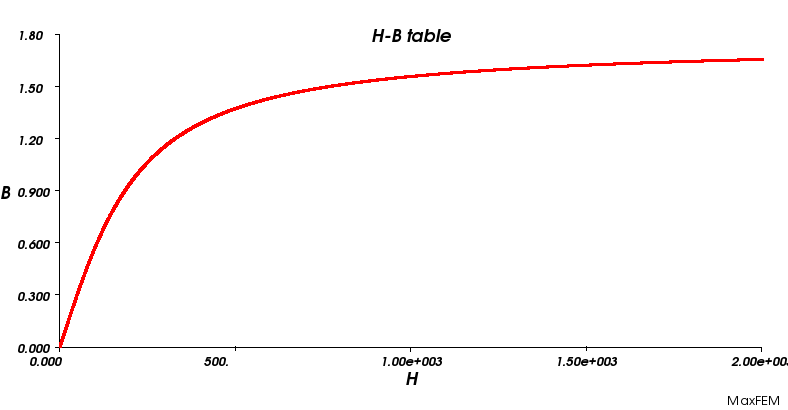
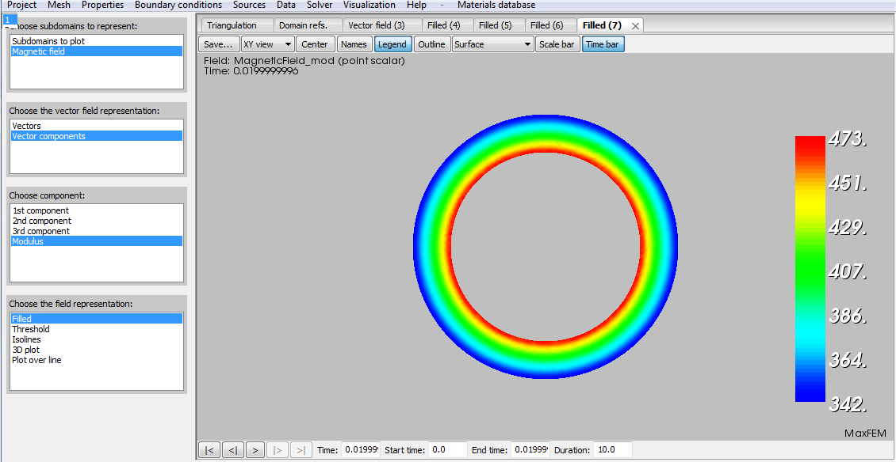

| Scale: 0.8 Density: 50% | Scale: 0.8 Density: 100% |
 |
|
| Scale: 2 Density: 50% | Scale: 2 Density: 100% |
The MaxFEM Transient Magnetics 2D application numerically solves transient magnetics bidimensional problems in Cartesian coordinates. You can find extensive information about the transient magnetics mathematical model in the MaxFEM Models user guide.
MaxFEM allows to consider linear dielectric materials or conducting media as well as different kinds of sources. The admissible options are summarized in the tables below.
| Material properties (μ) | 2D | 3D |
| Linear and isotropic | Yes | --- |
| Linear and orthotropic | Yes | --- |
| Admisible sources | Volumetric | Surface |
| Current density | Yes | Yes |
| Current intensity | Yes | Yes |
| Potential drop | Yes | Yes |
For the numerical approximation of transient magnetics problems, MaxFEM uses Lagrange finite elements of order one to compute the z-component Az of the magnetic vector potential A. Thus the magnetic vector potential field is approximated by piecewise functions in each element of the mesh.
To use the transient magnetics application the user needs:
To provide a finite element mesh of the domain: menu Mesh.
To impose the boundary conditions on the boundaries: menu Boundary Conditions.
To assign materials to the different components of the domain: menu Properties. Materials must be previously selected and/or defined in the Materials database.
To assign source properties: menu Sources.
To solve the problem in direct or remote mode: menu Solver/Run or Solver/Run remote, respectively. The user can stop the computation before it is completed in the label Solver/Stop.
Once the problem has been solved, various quantities and fields based on the magnetic vector potential can be computed. It is also possible to create displays of the results: menu Visualization.
All the previous steps are described in the items below.
MaxFEM does not include a mesh generator tool so the user must provide its own meshes. In the transient magnetics application, mesh files can be in unv or mfm format (see section MaxFEM mesh files for a complete description of the mesh formats). In the transient magnetics application, MaxFEM allows P1 Lagrange triangular finite elements. Mesh may be loaded from the Mesh menu by choosing
Mesh → Open → Choose mesh file → meshfile
In the menu Properties the user can assign a material to the different parts of the computational domain.
First, you must select the number assigned to the domain reference in the mesh (1, for instance)
Properties → Materials → Choose domain references → 1
Then, you select the material (copper, for instance)
Properties → Materials → Choose material → copper
Boundary conditions is a menu entry to define boundary or interface conditions and attach them to boundaries. Transient magnetics application considers two types of boundary conditions.
In this case, the value (Az)D of the magnetic vector potential on boundary ∂ΩD must be given. To do that, you need:
Define the boundary condition (for instance, Condition 1)
Boundary conditions → Dirichlet: magnetic vector potential, Az (Wb/m) → Condition 1 → Add
Define the boundary condition via a constant or a precompiled function
Magnetic vector potential: Condition 1
The condition is given by: A constant or a function
Assign the boundary condition to the corresponding boundary reference(s). For instance:
The condition is given by → A constant → Line references → 3
If (Az)D takes a constant value, define this value:
The condition is given by: A constant → Constant value → 0
If (Az)D is a precompiled function, select “Function defined by user”:
The condition is given by: A function → Function name → user
In this case, the user must edit the file funciones.f of the folder $INSTALLDIR/sources/transient_magnetics2d/ of the installing directory and define its own function in the line 125, just after the sentences
if(modo.eq.1)then
if(trim(etiqueta).eq.'User_defined')
Then, you must recompilate the solver before running it.
In this case, the value H·τ of the tangential component of the magnetic field on the boundary ∂ΩN must be given. To do that, you need to follow the same steps as for the Dirichlet conditions but selecting
Boundary conditions → Neumann: tangential component of magnetic field H·τ (A/m)
In this case, the user must edit the file funciones.f of the folder $INSTALLDIR/sources/transient_magnetics2d/ of the installing directory and define its own function after line 150, just after the sentences
if(modo.eq.1)then
if(trim(etiqueta).eq.'User_defined')
In the transient magnetics application, sources can be:
To impose each of them, you must perform the following steps depending on the type of source.
Volumetric or surface current density
Choose the type of source in the Sources item of the application.
Sources → Volumetric/Surface sources → Current density, Jz
Then, define a volumetric/surface current density and press the button Add of the dialog box.
Volumetric/Surface current density: source _1 → Add
Define the current density via a constant or a precompiled function. For instance
Surface current density: source _1
The condition is given by: A constant or a function
Assign the current density to the corresponding volumetric/surface reference(s). For instance:
The condition is given by → A constant → Volumetric references → 3
If Jz takes a constant value, define this value:
The condition is given by: A constant → Constant value → 3
If Jz is a precompiled function, select “Function defined by user”:
The condition is given by: A function → Function name → User_defined
In this case, the user must edit the file funciones.f of the folder $INSTALLDIR/sources/transient_magnetics2d/ of the installing directory and define its own function in the line 28 for the volumetric source or the line 74 for the surface source, just after the sentences
if(modo.eq.1)then
if(trim(etiqueta).eq.'User_Defined')
if(itipo.eq.1) then
Then, you must recompilate the solver before running it.
Volumetric or surface current intensity
Choose the type of source in the Sources item of the application.
Sources → Volumetric/Surface source → Current intensity, I (A)
Then, define a new volumetric/surface current intensity and press the button Add of the dialog box.
Volumetric/Surface current intensity: source _1 → Add
Define the current intensity via a constant or a precompiled function. For example
Volumetric current intensity: source _1
The condition is given by: A constant or a function
Assign the current intensity to the corresponding volumetric/surface reference(s). For instance:
The condition is given by → A constant → Surface references → 3
If I takes a constant value, define this value:
The condition is given by: A constant → Constant value → 3
If I is a precompiled function, select “Function defined by user”:
The condition is given by: A function → Function name → User_defined
In this case, the user must edit the file funciones.f of the folder $INSTALLDIR/sources/transient_magnetics2d/ of the installing directory and define its own function in the line 30 for a volumetric source or line 76 for a surface source, just after the sentences
if(modo.eq.1)then
if(trim(etiqueta).eq.'User_defined')
if(itipo.eq.1) then
f=0.d0
else
for a volumetric source, or
if(modo.eq.1)then
if(trim(etiqueta).eq.'User_defined')
if(itipo.eq.1) then
gs=0.d0
else
for a surface source.
Then, you must recompilate the solver before running it.
Volumetric or surface potential drop
Choose the type of source in the Sources item of the application.
Sources → Volumetric/Surface source → Potential drop, ΔV (V/m)
Then, define a volumetric/surface potential drop and press the button Add of the dialog box.
Volumetric/Surface potential drop: source _1 → Add
Define the conductor type: single or coupled. For instance
Surface potential drop: source _1
Choose conductor type: Single or coupled
Assign the initial intensity and material to the corresponding volumetric/surface reference(s) for each conductor. In the case of a surface source, the thickness of each conductor must also be defined. For instance:
Choose conductor type: → Single → Fill in the following data: → Conductor → Surface references → 5
Choose conductor type: → Single → Fill in the following data: → Conductor → Material → copper
Choose conductor type: → Single → Fill in the following data: → Conductor → Initial intensity → 3000
Choose conductor type: → Single → Fill in the following data: → Conductor → Thickness (m): → 1.e-3
Define the potential drop via a constant, a function (sine or cosine) or a precompiled function
Fill in the following data: → Potential drop → The source is given by: → A constant, a function or a precompiled function
If ΔV takes a constant value, define this value:
The condition is given by: A constant → Constant value (V/m) → 3
If ΔV is a function (sine or cosine), define its amplitude and frequency. For instance
The condition is given by: A function → Sine → Fill in the following data: → Amplitude (V/m) → 10
The condition is given by: A function → Sine → Fill in the following data: → Frequency (Hz) → 1.e-2
If ΔV is a precompiled function, select “Function defined by user”:
The condition is given by: A precompiled function → Function name → User_defined
In this case, the user must edit the file funciones.f of the folder $INSTALLDIR/sources/transient_magnetics2d/ of the installing directory and define its own function in the line 387 (as well as line 399 if the conductor is coupled) for the volumetric source or the line 556 (as well as line 568 if the conductor is coupled) for the surface source, just after the sentences
elseif(trim(etiqueta).eq.'User_Defined') then
if(indice.eq.1) then
modo1=potencial_dat_vol%modo1(indice)
valor1=potencial_dat_vol%valor1(indice)
etiqueta1=potencial_dat_vol%etiqueta1(indice)
espesor=potencial_dat_vol%valor0(indice)
sigma1=sigma_vol(indice,modo1,valor1,etiqueta1)
for a single conductor (and the first conductor in the case of a coupled conductor), and
if(indice.eq.2) then
modo1=potencial_dat_vol%modo1(indice)
valor1=potencial_dat_vol%valor1(indice)
etiqueta1=potencial_dat_vol%etiqueta1(indice)
espesor=potencial_dat_vol%valor0(indice)
sigma2=sigma_vol(indice,modo1,valor1,etiqueta1)
for the second conductor in a coupled conductor.
Then, you must recompilate the solver before running it.
As the resulting problem can be non-linear, to solve it the user has the option to define the convergence tolerance and maximum number of iterations allowed. To do that, choose the option
Data → Mathematical parameters
on the menu bar. A dialog box appears where the user can introduce the values of these two parameters. To do that:
Furthermore, the user has to choose a time step and an interval for the resolution. By clicking on
Data → Time interval
a dialog box appears, in which the user must specify the time parameters with the format
Time interval (s): → initial_time : time_step : final_time
In this application, parameters depending on temperature are not considered.
From the resolution of the transient magnetics problem, appropriate derived quantities can be computed. The post-processing quantities available in the MaxFEM transient magnetics application are summarized in the table below.
| Symbol | Magnitude | Type | Unit |
| Az | z-component of the magnetic vector potential | S | Wb/m |
| H | Magnetic field | V | A/m |
| B | Magnetic flux density | V | T |
| I | Intensities | S | A |
Transient magnetics application postprocessing quantities
S: Scalar quantity, V: vectorial quantity
MaxFEM provides a set tools for post-processing and visualization which are available through the item Visualization of the menu bar. The options and their characteristics are summarized in the table below.
| Item | Visualization options | Description |
Mesh |
Triangulation | Represents the mesh of the domain |
| Domain references | Displays subdomains reference number | |
| Line references | Displays lines reference number | |
| Vertex references | Displays points reference number | |
| Element numbering | Displays elements reference number | |
| Vertex numbering | Displays the number of a vertex previously chosen with the mouse | |
| Materials | Displays the name of the material assigned to a subdomain | |
|
|
Filled | Displays the field distribution on the domain |
| Threshold | Extracts the cells that fall between a given lower and upper thresholds of the field | |
| Isolines | Displays the curves along which the field has a constant value. A set of scalar values can be specified to extract more than one isoline at a time | |
| 3D plot | Displays a three-dimensional plot of the field over the domain | |
| Plot over line | Cuts a 3D data object with a plane. An interactive widget can be used for placing the plane in the appropriated place | |
Magnetic field H |
Subdomains to plot | Allows to choose the domain where results will be displayed |
| Vectors | Displays the vector field | |
| Vectors components | Displays each of the components of the vector field | |
| Intensities, I | 2D graphic | Displays the evolution of the intensities in the different conductors in the time interval. Allows to choose the visualization range |
| Close all | --- | Closes all the windows containing the visualization results |
The user can modify the size of the arrows by using the parameter Scale in the dialog box, for instance at 0.8
Magnetic field → Vectors → Choose options for arrows → Scale → Select the scale for arrows → 0.8
It is also possible to modify the number of vectors in the plot by using the parameter Density in the dialog box, for instance at 50%:
Magnetic field → Vectors → Choose options for arrows → Density → Select the density for arrows (%) → 50
| Scale: 0.8 Density: 50% | Scale: 0.8 Density: 100% |
|
|
| Scale: 2 Density: 50% | Scale: 2 Density: 100% |
As the resulting problem is time-dependant, the computed fields may also depend on time. To display a certain in different time steps (chosen in Data → Mathematical parameters) the user must open the desired visualization and click in the Time bar box. Then, the time bar appears in the bottom of the visualization window. This bar allows the user to display the chosen field at different time steps (by steping forward or backward), as well as playing animations.
The goal of this section is to familiarize the user with the MaxFEM transient magnetics 2D application by means of simple examples. These examples contain the general steps and all the data needed to describe the physics and to solve the given cases.
To reproduce exactly the examples, keep all the options in the different menus at the default settings. It is important to note that in the cases where the analytical solution is provided, this solution corresponding with the default settings; the one corresponding with other options the user may have changed is not necessarily the same.
Remember that before start to work with a particular application, the user must choose a working directory. This directory will be used to store the files associated with the application. In particular, when a sample data is selected, the interface will automatically make a copy of the files associated with that sample in the working directory.
For the transient magnetics 2D application, the following examples are available:
Bermúdez, A.; Domínguez, O.; Gómez, D.; Salgado, P. Finite element approximation of nonlinear transient magnetic problems involving potential drop excitations. In preparation.
Statement of the problem
This example is the extension of the Example 1 described in the Magnetostatic 2D application for the case in which the coil carries a transient electric current.
Let us consider a cylindrical core composed by a magnetic material and surrounded by an infinitely thin coil. The core is assumed to be infinite in the z-direction and its transversal section is described in Figure 1. The coil, which is also infinite in the z-direction, is modeled like a surface conductor in 3D and by a line in 2D; namely, the inner coil is placed at r = R1 and the outer one at r = R2.
Figure 1: Sketch of the domain.
We suppose that the coil carries a known transient current density Jz(t) which goes in the axial direction and it is uniformly distributed in such direction. Our objective is to compute the magnetic fields in the magnetic core where there is no source. The magnetic material of the core is isotropic and non linear with the following constitutive relation:

μ0 being the magnetic permeability of the vacuum, Js = 1.75 and μr = 5000. The material used, called Test Material 6 in the database, has been introduced in the materials database providing a table with the values of the H-B curve; notice that the table has a lot of points to guarantee a good approximation.

Figure 2: H-B curve of Test material 6.
As in the magnetostatic example, both conductors carry the same current intensity with opposite sign, and therefore we can also compute the surface voltage drop between them (see again, [1]); this voltage will be the data of this example and depends on the thickness of the coil and on its electrical conductivity. The expression of the voltage drop is introduced by means of a user defined function called Example_1. In particular, the surface electrical conductivity of the coils is computed as the product of the electrical conductivity of the conductors by the thickness given for these conductors. Moreover, when the data is the voltage drop the mathematical model also needs the initial current intensity, which in this case is equal to 3000 A because the exact current intensity is a cosine function of frequency 50 and amplitude 3000. Therefore, the problem will be solved in a cycle, that is, in the time interval [0,0.02].
The device is surrounded by air to impose the boundary condition Az = 0 on the outer boundary of the whole domain.
In this case, as it happens in the magnetostatic example, the analytical solution is known (see [1]); namely, the magnetic field is given by:
Resolution procedure
Once MaxFEM is open, the user must select the application Transient magnetics 2D from the Project of the menu bar.
Project → Applications → Transient magnetics 2D
Remember that before start to work with a particular application, the user must choose a working directory.
Then, from the item Project of the Menu bar, select
Project → Sample Data → Example 1: Surface potential drop
The computational domain is a circle of center (0,0) and radius 15. The user must upload the mesh malla_J.mfm from the Mesh item of the menu bar.
Mesh → Open → Choose mesh file → malla_J.mfm
The user can display the mesh of the computational domain by choosing the option Visualization → Mesh of the Menu bar. If not, the computational domain will be displayed when selecting any item from the menu bar.
After we have the mesh, we start to go through the menu bar from the left to right and we choose the different options related to the whole simulation.
The materials considered in this example are air and the so-called Test Material 6, and their properties have been previously defined in the materials database of the interface. To assign these materials to the computational domain, the user must:
Select the item Properties → Materials of the Menu bar.
In the Choose surface references dialog box, select the reference 1.
The dialog box Choose material appears; by default, the material named Air associated to the reference 1 is displayed.
In the Choose surface references dialog box, select the reference 2.
The dialog box Choose material appears; by default, the material named Test Material 6 associated to the reference 2 is displayed.
Figure 3: Computational domain and materials.
The user can display the different properties of this material in Materials database item of the menu bar. To do that,
Select the option Materials database → Open
A dialog box appears where the different materials are displayed. Select Test material 6.
A new dialog box appears where the different electromagnetic magnitudes are displayed. Click on the property of your interest, for instance, Electrical conductivity.
Choose A constant in the box below and then Isotropic in the Behavior box.
In the Value box, 0.167e7 is displayed.
Now we are going to impose the boundary conditions. A Dirichlet boundary condition is considered; the default value 0 corresponds to the value of the z-component of the magnetic vector potential in the boundary of the circle. To impose this boundary condition the user must:
Select the option Boundary conditions → Dirichlet: magnetic vector potential in the menu bar.
Click on Condition 1 on the Magnetic vector potential: dialog box.
In the dialog box The condition is given by, select the option A constant
Click on Line reference. By default, number 3 associated to this reference is displayed in the box below. Click on 3 to display the reference in the visualization window.
Click on Constant value. By default, in the dialog box Constant value below the value 0 appears.
Click on the item Sources of the Menu bar to continue with the resolution procedure.
To define the source of the problem, select the option Sources → Surface sources → Potential drop in the menu bar. A dialog box appears where the user can select/define the potential drop options. In this example, the default option Source 1 is displayed. So now we need to specify the conductor type, the properties of the conductor(s) and the potential drop. To do that, the user must:
Click on Source 1. A dialog box is displayed below.
Choose the Coupled conductor type.
Click on First conductor and then on Second conductor to choose the surface references, material, initial intensity and thickness of the conductors. In this example, we consider the surface references 5 and 4, the material is Test material 6, the initial intensity is 3000 A and the thickness is 1.e-3 in both cases.
Click on Potential drop to display/define the value of the potential drop. In this example, the potential drop is defined by the precompiled function Example 1.
The item Data of the menu bar allows to introduce different data depending on the application. In transient magnetics, the parameters available are time interval, convergence tolerance and maximum number of iterations. To define these parameters the user must
Select Data → Time interval in the menu bar.
The dialog box Time interval (s): appears. By default, the interval 0:0.0002:0.02 is displayed.
Select Data → Mathematical parameters in the menu bar.
The dialog box Choose Parameters: appears. By clicking in Convergence of tolerance and Maximum number of iterations the user can introduce the corresponding data, which are by default 1.e-4 and 2000.
Select the item Run (or Run remote depending on your preference) of the menu bar to proceed with the resolution of the problem.
Select the item Visualization of the menu bar to display the results.
Click on the option Magnetic field to display the magnetic field H. A dialog box appears where the user can choose the field representation.
Select the options Subdomains to plot → 2 and Magnetic field → Vector components to represent each of the components of the magnetic field or its modulus. Then, choose the 1st component and Filled.
Visualization → Magnetic field → Magnetic field → Vector components→ 1st component → Filled
Figure 4: First component of the magnetic field H in the core at time 0.02 s.
To represent the second component of the magnetic field follow the same steps as in the previous case but choosing
Visualization → Magnetic field → Magnetic field → Vector components→ 2nd component → Filled

Figure 5: Second component of the magnetic field H in the core at time 0.02 s.
In order to visualize the magnetic field modulus
Visualization → Magnetic field → Magnetic field → Vector components→ Modulus → Filled

Figure 6: Modulus of the magnetic field H in the core at time 0.02 s.
To display the magnetic field direction, choose the option Visualization → Magnetic field of the menu bar. Select the options Magnetic field and Vectors of the dialog box and then state the values for the scale and density of the arrows on the boxes below. For this picture, the scale is 0.0002 and the density is 100.
Figure 7: Zoom of the vector field H in the core at time 0.02 s.
Choose Visualization → Intensities to plot the current intensity along time
Figure 8: Current intensity versus time.
Statement of the problem
This example is very similar to Example 1, but the coil is modeled as a volumic device; that is, in the 2D model we use surface regions to represent the transversal section of the coil. The thickness of the coil is very small (1 mm) in order to use the same analytical solution described in Example 1. The data in this case will be the volumic voltage drop between the two sections of the coil and will be provided by means of the function Example_2. The initial current intensity in this case is equal to 0 A because the exact current intensity is a sinusoidal function of frequency 50 and amplitude 3000. Therefore, the problem will be solved in a cycle, that is, in the time interval [0,0.02].
Resolution procedure
Once MaxFEM is open, the user must select the application Transient magnetics 2D from the Project of the menu bar.
Project → Applications → Transient magnetics 2D
Remember that before start to work with a particular application, the user must choose a working directory.
Then, from the item Project of the Menu bar, select
Project → Sample Data → Example 2: Volumetric potential drop
The computational domain is a circle of center (0,0) and radius 15. The user must upload the mesh mallavvol.mfm from the Mesh item of the menu bar.
Mesh → Open → Choose mesh file → mallavvol.mfm
The user can display the mesh of the computational domain by choosing the option Visualization → Mesh of the Menu bar. If not, the computational domain will be displayed when selecting any item from the menu bar.
After we have the mesh, we start to go through the menu bar from the left to right and we choose the different options related to the whole simulation.
The materials considered in this example are the so-called Test material 9 and Test Material 6, and their properties have been previously defined in the materials database of the interface. To assign these materials to the computational domain, the user must:
Select the item Properties → Materials of the Menu bar.
In the Choose domain references dialog box, select the references 1, 8 and 9.
The dialog box Choose material appears; by default, the material named Test material 9 is associated to the references 1, 8 and 9.
In the Choose surface references dialog box, select the reference 2.
The dialog box Choose material appears; by default, the material named Test Material 6 associated to the reference 2 is displayed.
The user can display the different properties of this material in Materials database item of the menu bar. To do that,
Select the option Materials database → Open
A dialog box appears where the different materials are displayed. Select Test material 9.
A new dialog box appears where the different electromagnetic magnitudes are displayed. Click on the property of your interest, for instance, Electrical conductivity.
Choose A constant in the box below and then Isotropic in the Behavior box.
In the Value box, 0.769e7 is displayed.
Now we are going to impose the boundary conditions. A Dirichlet boundary condition is considered; the default value 0 corresponds to the value of the z-component of the magnetic vector potential in the boundary of the circle. To impose this boundary condition the user must:
Select the option Boundary conditions → Dirichlet: magnetic vector potential in the menu bar.
Click on Condition 1 on the Magnetic vector potential: dialog box.
In the dialog box The condition is given by, select the option A constant
Click on Line reference. By default, number 3 associated to this reference is displayed in the box below. Click on 3 to display the reference in the visualization window.
Click on Constant value. By default, in the dialog box Constant value below, the value 0 appears.
Click on the item Sources of the Menu bar to continue with the resolution procedure.
To define the source of the problem, select the option Sources → Volumetric sources → Potential drop in the menu bar. A dialog box appears where the user can select/define the potential drop options. In this example, the default option Source 1 is displayed. So now we need to specify the conductor type, the properties of the conductor(s) and the potential drop. To do that, the user must:
Click on Source 1. A dialog box is displayed below.
Choose the Coupled conductor type.
Click on First conductor and then on Second conductor to choose the domain references, material and initial intensity of the conductors. In this example, we consider the domain references 9 and 8, the material is Test material 9 and the initial intensity is 0 A.
Click on Potential drop to display/define the value of the potential drop. In this example, the potential drop is defined by the precompiled function User defined.
The item Data of the menu bar allows to introduce different data depending on the application. In transient magnetics, the interface allows to introduce the time interval, the convergence tolerance and the maximum number of iterations. To define these parameters the user must
Select Data → Time interval in the menu bar.
The dialog box Time interval (s): appears. By default, the interval 0:0.0002:0.02 is displayed.
Select Data → Mathematical parameters in the menu bar.
The dialog box Choose Parameters: appears. By clicking in Convergence of tolerance and Maximum number of iterations the user can introduce the corresponding data, which are by default 1.e-4 and 2000.
Select the item Run (or Run remote depending on your preference) of the menu bar to proceed with the resolution of the problem.
Select the item Visualization of the menu bar to display the results.
Choose Visualization → Intensities to plot the current intensity along time
Figure 1: Current intensity versus time.
Click on the option Magnetic field to display the magnetic field H. A dialog box appears where the user can choose the field representation.
Select the options Subdomains to plot → 2 and Magnetic field → Vector components to represent each of the components of the magnetic field or its modulus. Then, choose the 1st component and Filled.
Visualization → Magnetic field → Magnetic field → Vector components→ 1st component → Filled
Figure 2: First component of the magnetic field H in the core at time 0.02 s.
To represent the second component of the magnetic field follow the same steps as in the previous case but choosing
Visualization → Magnetic field → Magnetic field → Vector components→ 2nd component → Filled
Figure 3: Second component of the magnetic field H in the core at time 0.02 s.
In order to visualize the magnetic field modulus
Visualization → Magnetic field → Magnetic field → Vector components→ Modulus → Filled
Figure 4: Modulus of the magnetic field H in the core at time 0.02 s.
To display the magnetic field direction, choose the option Visualization → Magnetic field of the menu bar. Select the options Magnetic field and Vectors of the dialog box and then state the values for the scale and density of the arrows on the boxes below. For this picture, the scale is 0.002 and the density is 90.
Figure 5: Vector field H in the core at time 0.02 s.
Click on the option Visualization → Magnetic vector potential to display the z-component of the magnetic field A. A dialog box appears where the user can choose the field representation.
Click on Isolines and type 15 in the box below to display 15 magnetic vector potential contour lines.
Figure 6: Contour lines of the field Az in the core at time 0.02s.